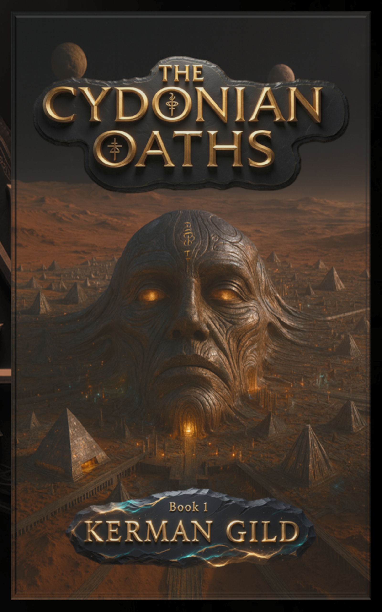
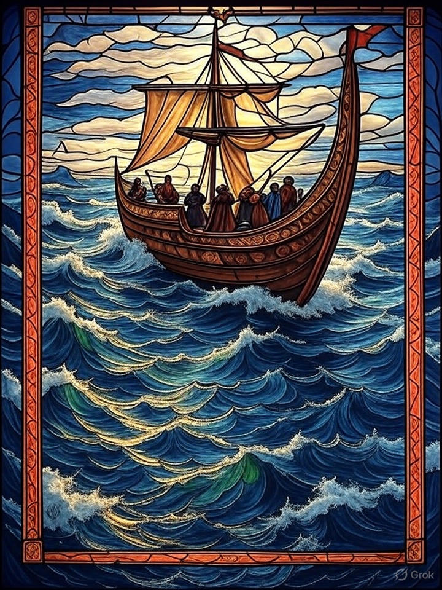

Christian Sci-Fi Where Biblical Prophecy Is the Plot Architecture
You want speculative fiction where the prophecies of Ezekiel, Daniel, and Revelation aren't background scenery — they are structural load-bearing walls. Kerman Gild publishes two series built exactly this way: The Nephilim Chronicles uses 1 Enoch, Jubilees, and Revelation as literal plot hardware. The Stone and the Sceptre Chronicles uses Jeremiah's commission and Ezekiel's three prophetic overturns as its historical skeleton. Both series treat ancient prophecy as engineering.
Two companion series · Anchored in primary sources · Available on Amazon
Prophecy as Engineering, Not Flavour
Most apocalyptic fiction uses prophecy as atmosphere. Kerman Gild's two series use it as the actual clock that governs every event in the narrative. The timeline is not invented — it is drawn from the prophetic literature and calibrated against the biblical text.
The Nephilim Chronicles traces the Watcher transgression and its eschatological consequences from antediluvian history through the opening of the Revelation seals. The enemy roster is drawn from 1 Enoch. The prophetic sequence is drawn from Revelation. Nothing is invented that wasn't first attested in the primary sources.
The Stone and the Sceptre Chronicles traces the Davidic covenant through the three overturns that Ezekiel prophesied — from Jerusalem's fall to Ireland's shores to the prophesied western home of the covenant kingship. Jeremiah's commission is the spine of the plot. The Davidic bloodline is its thread.
"Surely the Lord God does nothing without revealing His secret to His servants the prophets."
— Amos 3:7Start Either Series — Both Available Now

The Cydonian Oaths
The Nephilim Chronicles — Book One
Mars, 2026. An antediluvian signal encoded in Watcher-era acoustic architecture. A Celtic warrior whose 2,600-year commission begins to resolve. Where prophecy meets science fiction.
Buy on Amazon ↗
The Stone and the Sceptre: A Scribe's Tale
The Stone and the Sceptre Chronicles — Book One
Jerusalem, 586 BCE. Jeremiah carries the covenant west. Tea Tephi carries the right. Ezekiel's first overturn begins — the Davidic bloodline moves toward its prophesied western home.
Buy on Amazon ↗What Readers Are Saying
"[Replace with a verified Amazon reader review from any of the series' product pages]"
"[Replace with a verified Amazon reader review]"
"[Replace with a verified Amazon reader review]"
Grounded in the Sources. Compelling in the Story.
Both series come with Amazon's standard return policy. No risk to begin. We're confident the first pages will settle the question of whether this is for you.